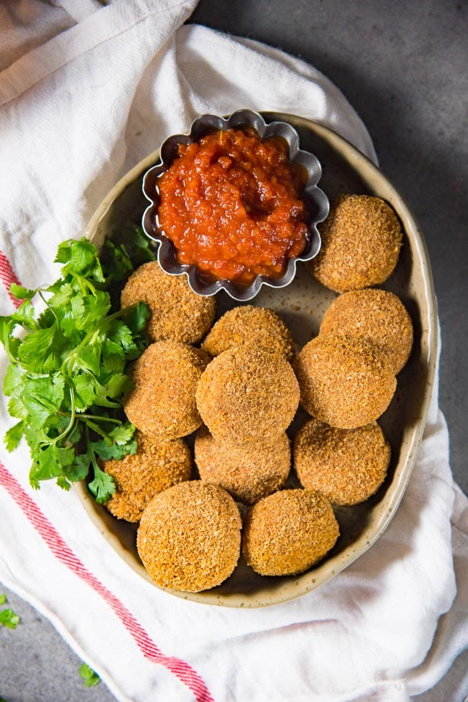

Sri Lankan Baked Fish Cutlets (Fish Croquettes)
Baked Fish Cutlets – a healthier alternative to deep-fried fish cutlets (fish
croquettes). A spicy fish filling coated with a deliciously crispy, crunchy,
golden breadcrumb coating. Perfect for snacking.
Preparation: 20minutes minutes
Cooling time: 15minutes minutes
Cooking: 40minutes minutes

8.5 oz mackerel,
bones removed or replace with same weight of cooked flaky fish this
is approximately the weight of the fish from 1 mackerel in brine can
1/2 medium
onion finely chopped
3 garlic
cloves finely chopped
or minced (about 1 tbsp minced garlic)
½ inch ginger finely
chopped or minced (about 1 tbsp minced ginger)
1 tsp Sri
Lankan curry powder
1/2 tsp black
pepper ground
1/2 tsp cayenne
pepper less if you
prefer a mild filling
2 serrano
peppers chopped finely
(deseeded if you prefer a milder heat)
2 tbsp ketchup
½ – ¾ lime about
1 – 1 ½ tbsp juice
8.5 oz russet
potato cooked, or any
floury potato
Salt
3 ¼ cup breadcrumbs
2 tbsp vegetable
oil
3 eggs
salt
Drain the canned fish and remove the bones. If you’re using cooked fresh
fish, make sure to de-bone the fish as well.
Heat 2 tbsp of vegetable oil or coconut oil in a large non-stick pan
over medium-high heat.
Add the finely chopped onion and saute for a few minutes until they’ve
softened. Add the garlic, ginger and saute for a further 30 seconds
until softened.
Add the curry powder, cayenne pepper, black pepper. Mix through the
onions.
Add the fish and mix with the onion-spice mix. Break the fish into
smaller pieces and saute until the mix is dry, and it takes on the color
of the spices – about 10 to 15 minutes. Do not let the mix burn (reduce
the heat if necessary). Add the tomato ketchup and green chili peppers
(serrano peppers) and mix through, and cook for a further 5 to 10
minutes.
Season with salt if needed (remember you are using brined mackerel, so
you may not need a lot of salt)
Mash the potatoes (some smaller chunks are ok!), and add this to the
fish mix. Mix well. Sprinkle the lime juice over the fish and potatoes
and mix well. Season and add more lime juice and salt if necessary.
Let the mix cool down.
In a large non-stick pan, heat the oil over medium heat. When the oil is
hot, add the breadcrumbs and stir to combine the breadcrumbs with the
oil as evenly as possible.
Stir frequently, until the breadcrumbs turn a golden brown in color and
are evenly toasted. Make sure to not let the breadcrumbs burn.
Immediately place the toasted breadcrumbs in a bowl and let it cool (uncovered).
Preheat the oven to 350°F / 180°C. Line a baking sheet with parchment
paper, and
set aside.
Break the eggs into a bowl and whisk gently to mix. Do not over beat and
let it form too many bubbles. Optional – add a pinch of salt to the eggs
and mix evenly.
Place the toasted breadcrumbs on a plate.
Portion the fish filling into 17 – 20 portions. Shape each portion into
round or oval disc-like shapes.
Evenly coat each cutlet with the eggs. Make sure there’s no excess egg
on the cutlets. You can use a fork to dip the cutlets in the eggs to
make it easier.
Next, place the egg coated fish cutlets in the toasted breadcrumbs and
coat them evenly. Use your fingers to gently press the breadcrumbs into
the cutlets to form a smooth crust, with no cracks.
Repeat the egg wash and breadcrumb coating once more. This second
coating is optional, but recommended for a crunchier crust.
Place the coated cutlets on the lined baking tray, with about 1 – 2 cm
of space between each.
Bake in preheated oven for about 5 – 7 minutes. Turn each cutlet over
and bake for a further 5 – 7 minutes.
Remove the cutlets from the oven and let them cool slightly. Serve while
very warm with tomato ketchup or tomato relish.
You can reheat the cutlets, by placing them in the warm oven for a few
minutes.